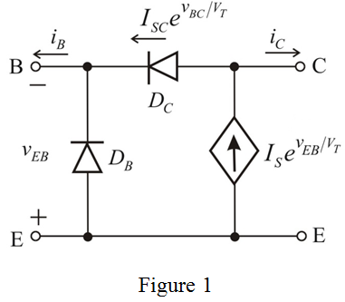

Refer to Figure 6.9 for modeling the operation of an npn transistor in saturation in the text book.
The current-voltage relationship of the pnp transistor will be identical to that of the npn transistor except that has to be replaced by .
.
Draw the equivalent circuit of a pnp transistor in saturation is shown in Figure 1.

Thus, the equivalent circuit of modeling the operation of an pnp transistor in saturation is drawn as shown in Figure 1.